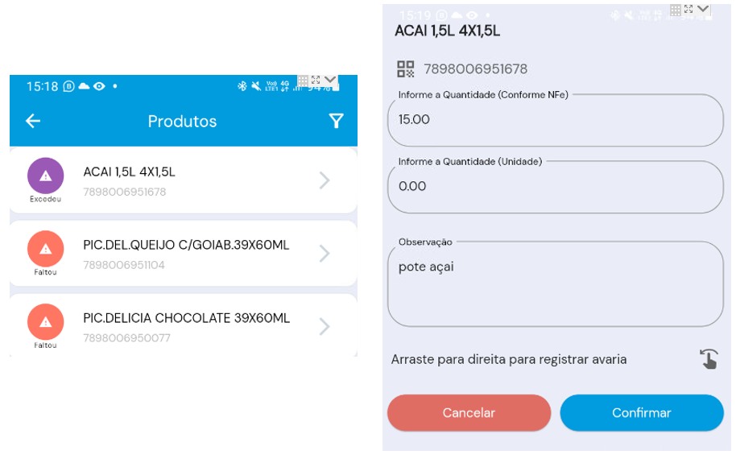
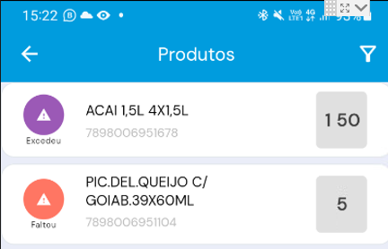
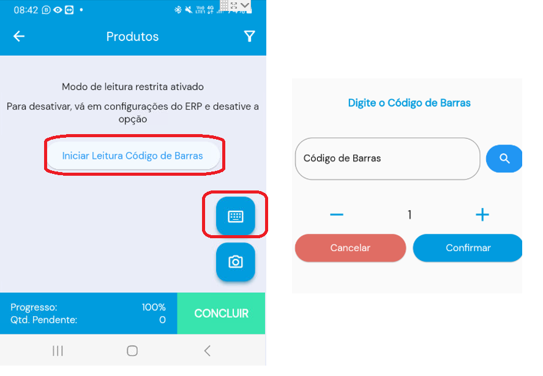
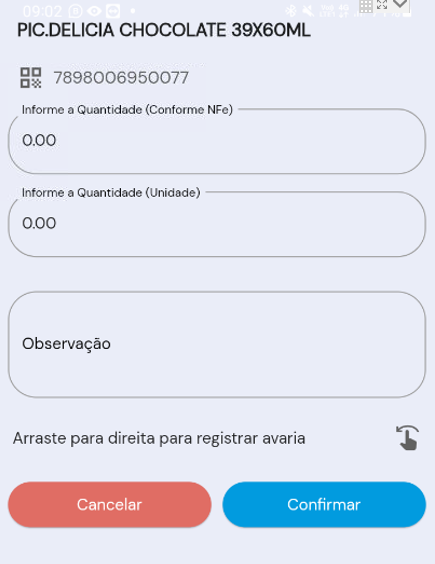
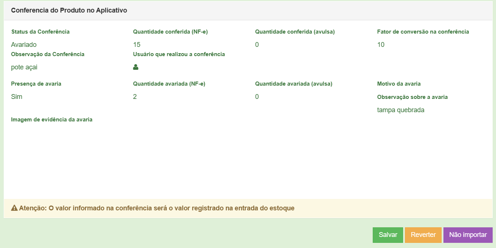
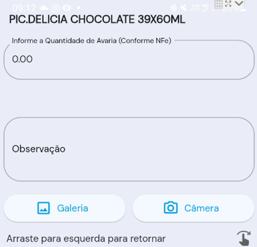
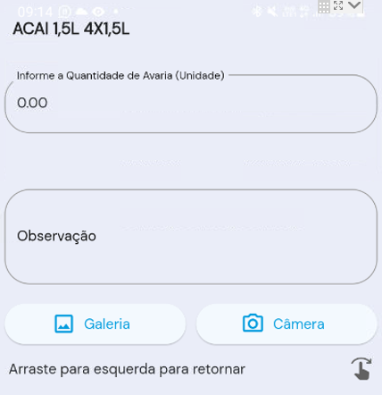
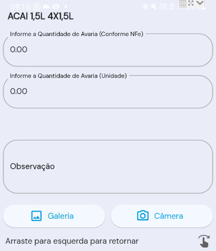
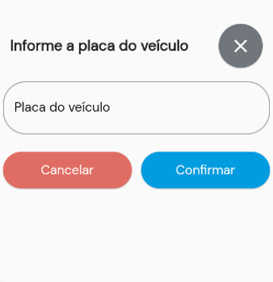

A ideia principal do aplicativo é permitir a conferência rápida e precisa dos produtos que recebeu fisicamente com o que constam em nota fiscal de compra. Além de poder informar possíveis avarias com as mercadorias. A principal funcionalidade do aplicativo Coletor de Dados reside na agilidade do processo de recebimento de mercadorias.
A principal funcionalidade do aplicativo Coletor de Dados reside na agilidade do processo de recebimento de mercadorias.
Se o respectivo cliente possuir o módulo FACILITA NFE o aplicativo COLETOR DE DADOS terá ACESSO DIRETO AOS XMLs, sem que o cliente precise importar o XML via NFE DE ENTRADA. (funcionalidade sendo desenvolvida)
Operadores utilizam seus smartphones para escanear códigos de barras dos produtos ou embalagens, inserir as quantidades recebidas e reportar eventuais avarias. Com a capacidade de anexar fotos e observações, o aplicativo permite uma documentação detalhada das ocorrências.
É importante salientar que esta solução não se comportará exatamente como o HARDWARE COLETOR DE DADOS, que gera automaticamente a entrada no estoque. O aplicativo tem como objetivo facilitar a conferência e agilizar o processo de importação de NFE no ERP. No entanto, a finalização da importação da nota terá que ocorrer pelo ERP para que a entrada no estoque seja registrada.
Após download e instalação via GOOGLE PLAY, será necessário realizar o primeiro acesso, conforme mostram as orientações abaixo:
Modo Escuro: Alteração do padrão de cores de visualização do aplicativo
Leitura restrita: Configuração que é apenas refletida com base na configuração oriunda do ERP, onde o operador não irá visualizar detalhes do produto (quantidade, descrição) ele utilizará apenas a câmera do smartphone para ler os produtos e lançar/confirmar a quantidade.
Modo de Leitura Rápida: Configuração que otimiza ou simplifica a visualização da quantidade já conferida de um item. Imagem abaixo mostra um exemplo SEM A MARCAÇÃO LEITURA RÁPIDA - Perceba que na frente de cada produto NÃO É EXIBIDO a quantidade já conferida.
A imagem abaixo mostra os produtos com a marcação LEITURA RÁPIDA MARCADA - Note que é exibido as quantidades já conferidas.
Alterar Empresa atual: Mostra a conta vinculada ao aplicativo, no cenário de franquias, será possivel mudar a conta vinculada.
Sincronizar configurações: Botão para forçar uma sincronização de dados entre aplicativo e ERP.
Realizar logout: Finaliza o acesso e habilita o aplicativo para um novo login.
Conferência da NF-e de entrada restrita: Com esta marcação o operador do COLETOR DE DADOS não terá acesso a lista de produtos e descrição de produtos. A única forma de se realizar a conferência seria pela leitura ou digitação de código de barras. Como mostra a sequência de prints abaixo:
Entrada parcial na NF-e de entrada: Com esta funcionalidade, o operador tem a flexibilidade de conferir parcialmente as mercadores de uma nota fiscal. Em outras palavras, ele pode iniciar o processo de conferência pelo aplicativo, registrando apenas as quantidades recebidas do fornecedor ou avarias de alguns itens, sem necessariamente concluir a conferência completa de todos os itens. As informações das conferências parciais são enviadas para a nuvem e atualizadas de forma parcial.
Posteriormente, o cliente pode retornar a essa conferência para finalizar os demais itens e, somente então, clicar em "CONCLUIR" para finalizar a conferência completa da compra. É importante ressaltar que o registro parcial é atualizado dentro da importação da nota, porém, para que as movimentações no estoque sejam registradas, a nota precisa ser completada e importada de forma integral.
Edição da quantidade de item conferido: Se marcada esta opção antes de finalizar a conferência será possivel editar itens já conferidos.
Limite de caracteres: Visando otimizar a leitura de código de barras compostos em caixas e/ou embalagens de produtos. Em alguns cenários o código de barra da caixa é composto pelo código do produto e outros códigos identificadores, neste caso a limitação dos caracteres visa especificar o número de caracteres que identificam o produto.
Quantidade na NF-e: Com esta marcação a conferência será sempre feita com base na quantidade documentada em NF-e. No cenário de embalagens com quantidades específicas do produto, o operador irá informar a quantidade de embalagem ou caixa do produto, no momento da entrada do estoque o ERP irá realizar no plano de fundo o fator de conversão, neste caso sem a necessidade do operador especificar a quantidade líquida dos produtos.
Quantidade Avulsa: Neste modelo de conferência, o lançamento da quantidade deverá ser liquido, o operador deverá manualmente realizar o fator de conversão.
Ambos: Os 02 modelos anteriores são utilizados em paralelo, como mostra o print abaixo, ele poderá lançar a quantidade documentada em nota de embalagem ou caixa e também de maneira individual uma quantidade liquida adicional.
Modo de registro de avarias: Para que o operador consiga registrar avarias em produtos, se ele deslizar para direita na tela de conferência, ele terá a possibilidade de especificar quantidade de produtos com avaria, uma observação e uma foto, para documentar a avaria. Estas informações será enviadas ao ERP e será possivel visualiza-las no módulo de NFE DE ENTRADA.
Quantidade na NF-e: Será possivel lançar avarias apenas pela quantidade documentada em NF-e, no cenário de embalagens com quantidades específicas do produto, o operador irá informar a quantidade de avaria relacionada a embalagem ou caixa do produto.
Quantidade Avulsa: O lançamento da avaria será feito pela quantidade liquida, sem o fator de conversão.
Ambos: As avarias podem ser lanças de ambos modelos, sendo especificado quantidade conforme NF-E (no cenário de embalagem ou caixa) ou no cenário líquido, informando apenas unidade.
A utilização do aplicativo deverá ser em um dispositivo smartphone Android, não é possivel utilizar dispositivos/hardwares de COLETA DE DADOS.
Não há necessidade de nenhum módulo adicional (Atualização em tempo real ou outros módulos) para utilizar o aplicativo COLETOR DE DADOS.
Passo obrigatório no início do processo de conferência é inserir a placa do veículo de transporte dos produtos, como mostra o print abaixo.
No ERP é possivel apenas conferir as informações lançadas pelo aplicativo COLETOR DE DADOS, não é possível editar uma conferência já realizada.
Na utilização de clientes no modelo de franquias, haverão controles e relatórios específicos no Painel BI da respectiva franqueadora, relacionado a utilização do COLETOR DE DADOS.
É obrigatório que FORNECEDOR que consta no XML já esteja cadastrado previamente no ERP.
Todos produtos presentes no XML deverão ser cadastrados previamente no ERP, sem esse cadastro o aplicativo COLETOR DE DADOS não conseguirá ler o XML e realizar os lançamentos de conferência.